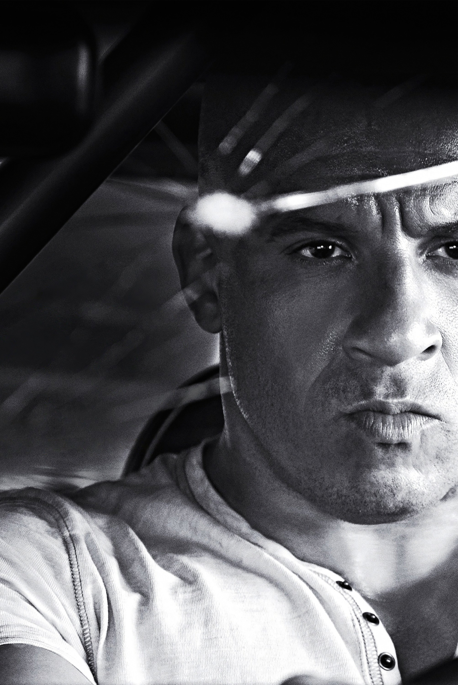
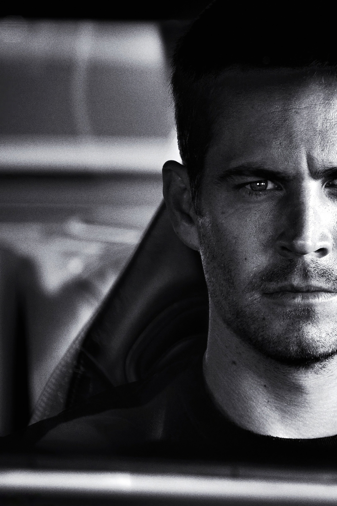
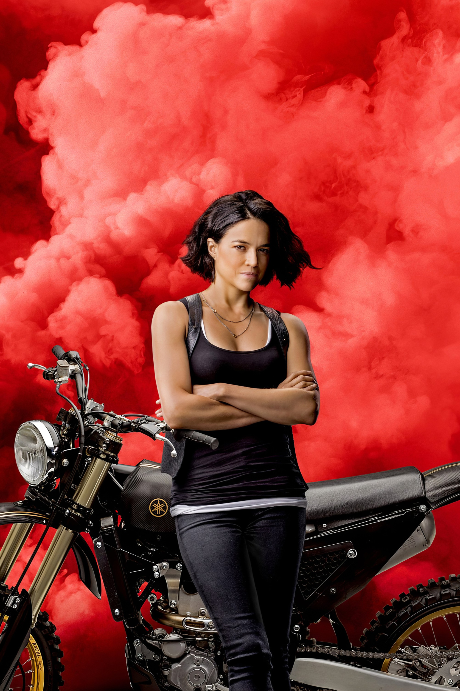
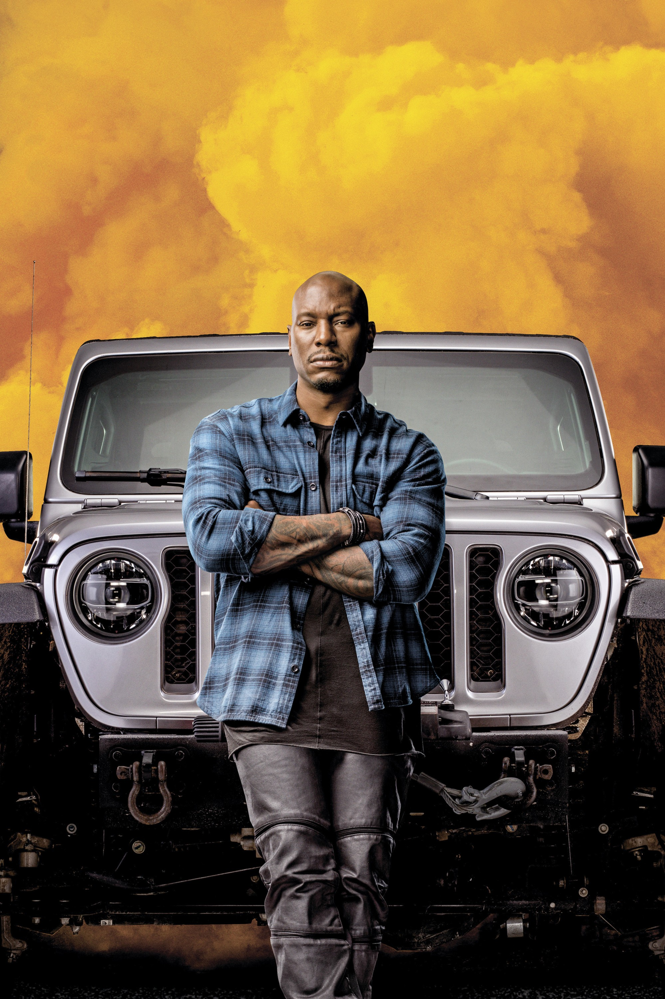

Personajes principales
Dominic Toretto

Líder del equipo, amante de la familia y experto en carreras callejeras.
Brian O'Conner

Ex policía convertido en corredor, gran amigo de Dom.
Letty Ortiz

Piloto experta y pareja de Dominic Toretto.
Roman Pearce

Conductor experto, amigo de Brian y parte clave del equipo.